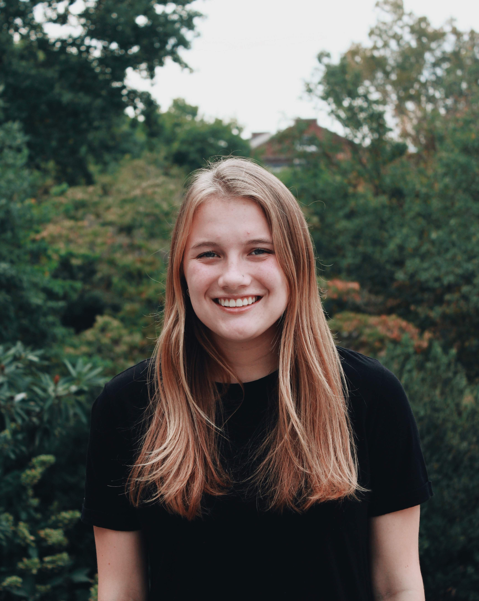
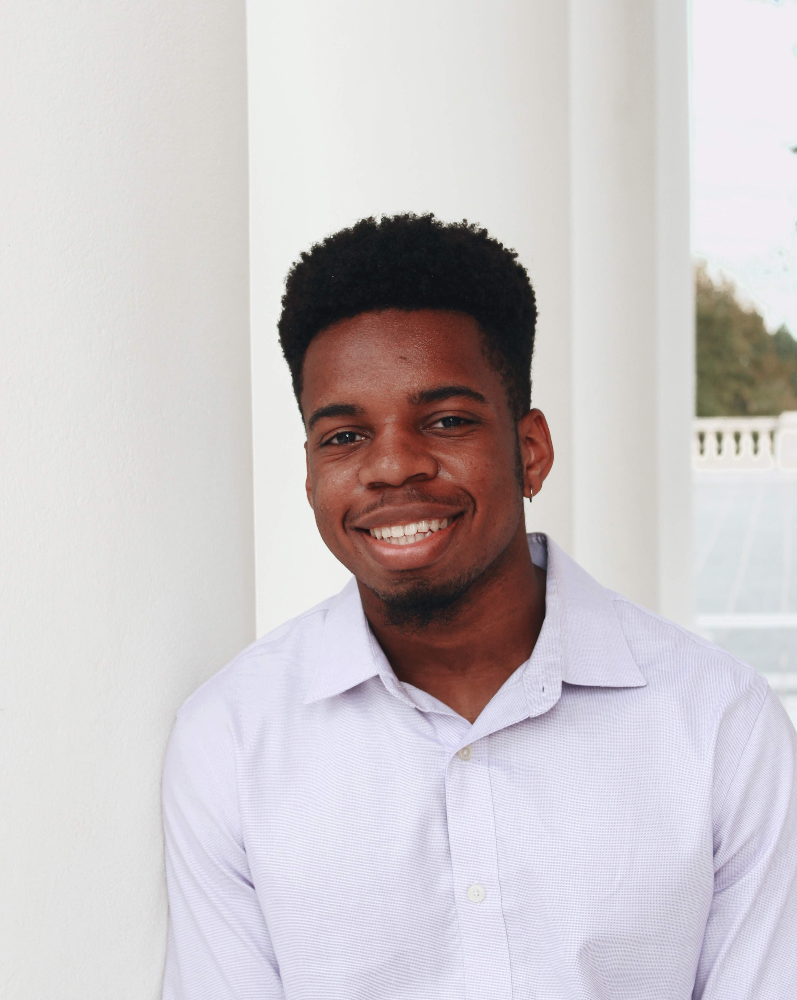

Simonne is a 2nd year majoring in Biology and Computer Science. As a sustainably conscious individual, she is interested in using biotechnological approaches to solve the world’s environmental problems. Simonne loves to find ways to reduce her carbon footprint and is excited about the potential impacts of her team’s iGEM project in helping further a more sustainable planet. She believes that synthetic biology can be used in collaboration with When Simonne is not in the lab with her E. coli “babies,” she enjoys hiking, reading, thrift-shopping, and cooking.”

Jermaine is a rising 2nd year majoring in Chemistry with a specialization Biochemistry. He is fascinated by how the arrangement of four nucleic acids is responsible for the diversity of life. He loves learning about microbiology and genetics. He is fascinated by the ability we possess as scientists to repurpose and engineer life. When Jermaine is not in the lab he loves to destress with a good workout or binge watching his favorite shows on Netflix.
Aarati is a rising 2nd year majoring in Human Biology. She is passionate about examining the interplay between modern biology and society in an increasingly technologically driven world. She is excited to see the increasingly important role of iGEM and Synthetic Biology in furthering biological research and its implication on the human condition. In her free time, Aarati enjoys spending time with her cat, watching the sunset, and listening to podcasts such as Science Vs. and Beautiful Anonymous.

Kobe is a 3rd year Biochemistry and Spanish double major. He is an essential part of the wetlab team. He hopes to enter the field of medicine, doing both research and clinical work. He is interested in the connection between language and medicine. In his free time, he watches excessive amounts of TV and plays video games, and makes his famous Crème Brûlée. He also enjoys the company of his two cats, Apollo and Nirvana.

Jainam is a 2nd year Biomedical Engineering major on the pre-med track. He enjoys learning about the intricate details that make up biological systems from the nano-scale to the organismal level. He heavily focuses on the applications of mathematics, computer science, physics, and other interesting subjects in the field of Synthetic Biology. While pouring through scientific literature or simulating a model, Jainam keeps everyone entertained by dancing and grooving to any song as he practices for his collegiate dance team.

Evan is a 3rd year majoring in biomedical engineering. He is the Captain of our team and also a member of the modeling committee. When he is not behind his computer screen working with Matlab or emphatically messaging his housemates to pay rent, Evan enjoys nerding out with music. As the assistant music director of the Academical Village People, an all male a cappella group at UVA, Evan spends his time arranging popular songs for his group which then performs them all over Grounds and the world.

Shaalini is a rising 2nd year studying Cognitive Science on a pre-health track. In addition to actively promoting STEM in the community, she is interested in exploring optometric and mobile impacts as a result of pediatric neurological conditions. While she is not being indecisive about her career path, you can find Shaalini dancing to the rhythm of anything, rewatching Friends episodes, and obsessing over Michael’s craft store sales. Her favorite quote is: “The butterfly counts not months but moments, and has time enough.” - Rabindranath Tagore

Alec is a 3rd year Biomedical Engineer majoring in biomedical engineering. He is our CFO and a contributor to the human practices committee. His lifetime goal is to found a company and become a successful entrepreneur. This year, he has dedicated himself to establishing our Synthetic Biology organization as a nonprofit. Alec’s best friend outside of lab is his dog, Charlie. In his spare time Alec spends his time going to dog parks and falling off his roof!

Katie is a 2nd year gender studies and biology double major who uses she/her pronouns. Katie is a human practices operative who facilitated communication and investigated the impact of our device on the world. Katie is fascinated by how the social world influences scientific thinking. Katie has been proudly tinder-free for 3 months! If she’s not at the library, you can find her pacing the snack aisle at the Asian food store lamenting over the paradox of choice.

Hannah is a 2nd year BME major. She is our graphic designer, and designed everything on our wiki, the poster, and presentation. She is passionate about graphic design and other artistic facets and tries to incorporate in whatever and wherever she can. She is still practicing her artistic skill in the hopes that it can be used as another comprehensive, functional language to explain more mathematically and scientifically heavy concepts. She secretly has awesome ninja skills and can climb trees.

Ben is a rising 2nd year majoring in computer science. He designed our Wiki! Ben loves to code and play videogames and he even has national ranking in Hearthstone. Due to his lovable personality, Ben has been voted as our team mascot. His favorite quote is: “The FitnessGram™ Pacer Test is a multistage aerobic capacity test that progressively gets more difficult as it continues. The 20 meter pacer test will begin in 30 seconds. Line up at the start. The running speed starts slowly, but gets faster each minute after you hear this signal. [beep]"